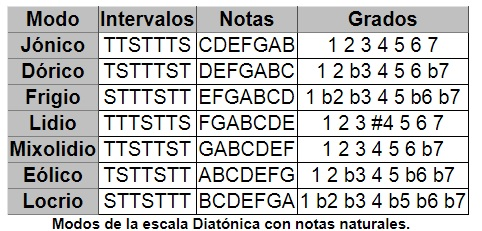
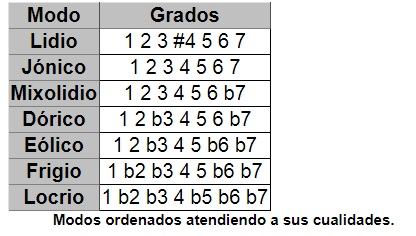

Las escalas se producen con la subdivisión de la octava en diferentes intervalos. Existen y han existido durante la historia diferentes tipos de escalas, pero la totalidad de la música occidental proviene de las escalas o modos griegos. Existen discusiones a cerca de cual de los modos griegos es el principal, pero consideraremos aquí como principal el modo jónico. Los otros seis modos se pueden obtener a partir de éste según cual de cada una de las notas consideremos como centro tonal, así la escala posee otra estructura de intervalos de tono o semitono entre sus notas. La escala Jónica coincide con la escala diatónica formada por las siete notas naturales tomadas desde DO hasta SI. Para obtener la escala dórica basta con tomar las mismas notas desde RE hasta DO. Y así sucesivamente, de forma exhaustiva:
Es muy importante percibir que aunque todos los modos estén contenidos en un mismo conjunto de notas, según donde se conciba su centro tonal, la escala posee una sonoridad y cualidades diferentes. Para ello se ha de pensar en las notas como grados desde la tónica y reconocer cada modo por las cualidades sonoras de sus intervalos. La escala mayor coincide con el modo jónico, y la escala menor con el eólico. Aún así, se dice que los modos jónico, lidio y mixolidio son mayores por poseer tercera mayor; también se dice que los modos dórico, frigio eólico son menores por poseer tercera menor. Otra forma ordenar y pensar a cerca de los modos es atendiendo a sus alteraciones respecto de la jónica, de tal forma que se aprecia que de uno a otro sólo existe una alteración:
